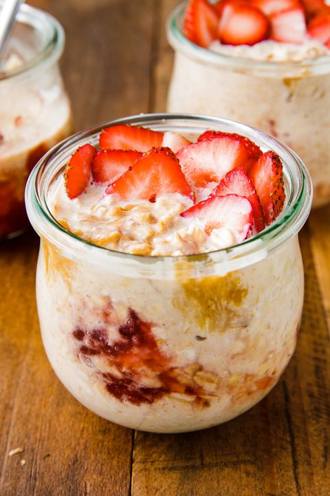

Baked Oats

Overnight peanut butter oats is the perfect, effortless breakfast for those who have little time in their mornings.
Combining sweet and salty flavours with silky, creamy oats, overnight peanut butter and strawberry oats will be your new go-to breakfast.
Peanut Butter Overnight Oats Ingredients
- 40g oats
- 120ml milk of choice
- 50g yoghurt (natural or greek yoghurt work well)
- 1 tablespoon natural strawberry jam
- 50g chopped strawberries
- 1 tablespoon peanut butter
Steps
- Add all ingredients to a container of choice.
- Cover container with a lid or clingfilm.
- Place in the fridge overnight (2 hours minimum)
- Take from fridge, grab a spoon and tuck in!